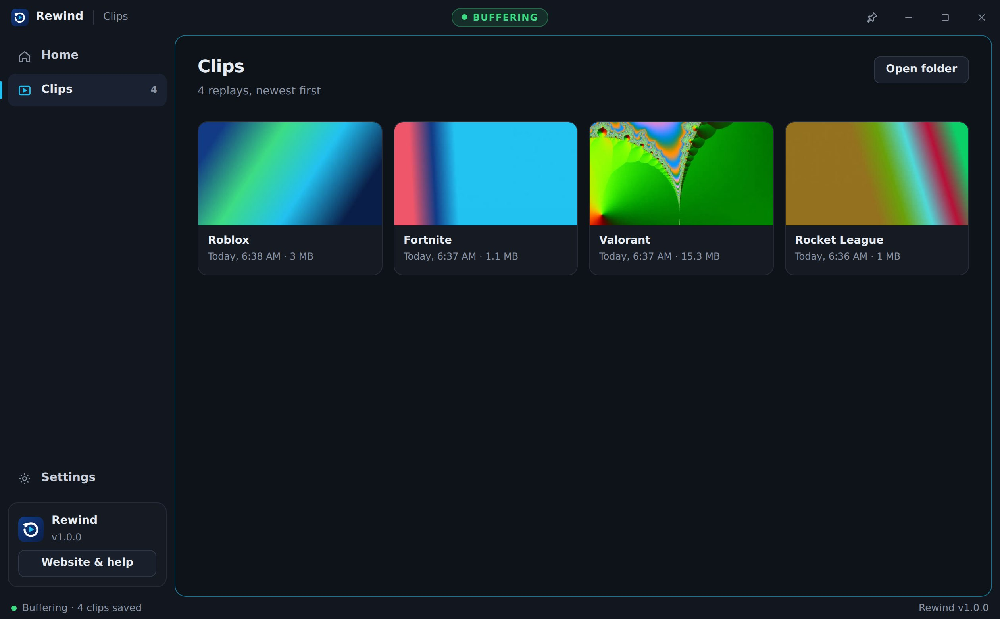

Save the play you just made.
Rewind keeps the last 30 seconds of your game running in the background. When something happens, press Alt + F8 and it's a clip.

Three steps, then forget about it.
Rewind sits in the tray and records over itself, so it never fills your drive. You only keep the moments you ask for.
Open Rewind
Unzip it anywhere and run Rewind.exe. It starts buffering right away and tucks into the tray.
Play like normal
Your graphics card does the recording, on a part of the chip your game doesn't use.
Press Alt + F8
You hear a short chime and the clip is saved to Videos\Rewind, named after the game.
Built for gaming PCs.
Everything stays on your computer. No account, nothing uploaded.
GPU encoding
Uses NVENC on NVIDIA, AMF on AMD, or Quick Sync on Intel, and falls back to the CPU if there's none.
Game and mic audio
Records what you hear, plus your voice if you want it, kept in sync even through silence.
15 seconds to 5 minutes
Pick how far back Rewind reaches. Saving takes about a second because nothing gets re-encoded.
Knows what you're playing
Spots the game in front and saves each replay in its own folder, like Rewind\Valorant. It can even start the buffer only when a game opens.
No black clips
If a game blocks screen capture, Rewind notices and records the game's window instead, without you doing anything.
A sound you can hear in-game
Pick a chime, shutter or pop at three volumes, so you know the clip saved without alt-tabbing.


Help
The usual first-run questions.
Windows says "Windows protected your PC"
That's SmartScreen. It shows for any new app that isn't signed with a paid certificate. Click More info, then Run anyway. You only need to do it once.
My clips are black
Rewind fixes this by itself. It checks the picture every few seconds, and if a game comes out black, it switches to recording that game's own window and remembers the game for next time. You'll see a note on the Home screen when that happens.
To force it for every game, open Settings → Games and set How to record games to Game window.
If clips are still black, set the game to borderless or windowed fullscreen. On laptops with two graphics chips, set Rewind to the same GPU as the game in Windows Settings → Display → Graphics.
The shortcut doesn't do anything
Another app may own that key. Open Settings in Rewind and press Change to pick a different one. Rewind warns you if a key is taken.
Alt + F10 is NVIDIA's own instant replay key, which is why Rewind uses Alt + F8.
Rewind thinks something is a game when it isn't
Open Settings → Games and press × next to it under Games Rewind has seen. Rewind won't treat it as a game again.
There's no sound in my clips
Check that Game and desktop sound is on in Settings. If you switched headphones or speakers after opening Rewind, turn it off and on again so Rewind follows the new device.
Where are my clips and settings?
Clips go to Videos\Rewind, or the folder you chose in Settings. Settings and the log are in %APPDATA%\Rewind.
Something broke
Open %APPDATA%\Rewind\rewind.log and look at the last few lines. They say what failed, which is the fastest way to get it fixed. You can also open an issue on GitHub.
Does it slow down my game?
With a GPU encoder, barely. The encoder is a separate part of the graphics chip. On CPU encoding, heavy games can lose a few frames, and 30 fps in Settings helps.